This report explains what I implemented, how I understand MeanFlow, the main design decisions and issues I considered, the three-image overfit result, and my attempted bonus experiment.
I implemented a small MeanFlow pipeline for image generation. The main required task was to overfit only three fixed training images and then show that one-step generation can reproduce those same images.
python train_overfit.pyThe script loads the data, selects three fixed images, trains the MeanFlow model on those images, saves the checkpoint, plots the loss curve, and saves the original-vs-generated image comparison.
Expected outputs:
checkpoints/meanflow_3_image_overfit.ptoutputs/loss_curve_3_image_overfit.pngoutputs/original_vs_generated_3_image_overfit.pngMy understanding is that MeanFlow helps generate an image using a one-step procedure. Instead of taking many small denoising steps, it learns the average velocity between two time stamps. This average velocity tells the model how to move from a noisy point toward a clean image.
In simple words, MeanFlow asks the question: at this noisy point z_t, how should I move so that I go
toward the clean image?
The noisy point is created by mixing the clean image x with Gaussian noise epsilon:
z_t = (1 - t) x + t epsilon
Here, t = 0 means the clean image and t = 1 means pure noise.
The velocity from the clean image to the noise is:
v = epsilon - x
MeanFlow does not only learn this instantaneous velocity. It learns an average velocity between two time points
r and t. The objective also includes a JVP term, which accounts for how the predicted
average velocity changes with time.
u_target = v - (t - r) * JVP term
During generation, we start from noise, use r = 0 and t = 1, predict the average velocity,
and then take one step:
x_generated = z - u(z, 0, 1)So the final generation process is only one model forward pass and one update step.
Note 1
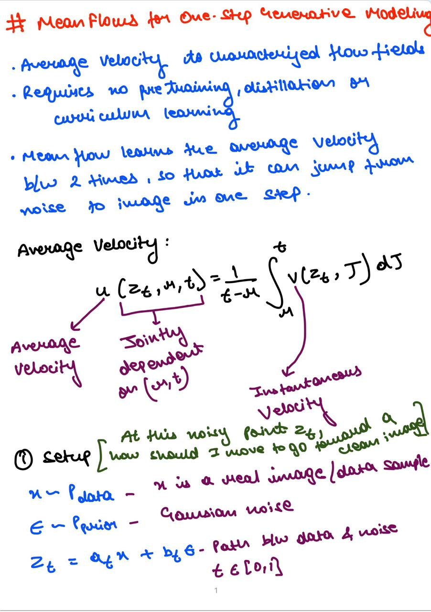
Note 2
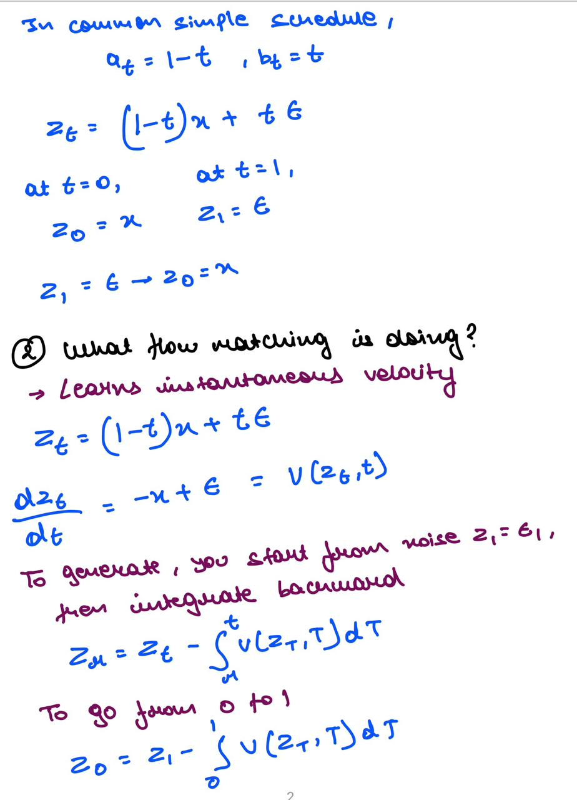
Note 3
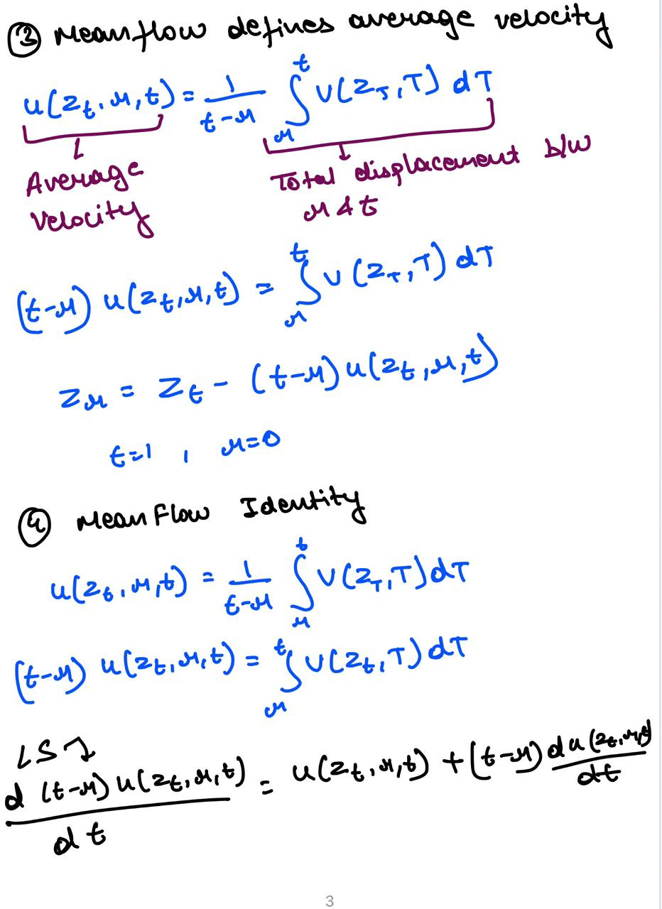
Note 4
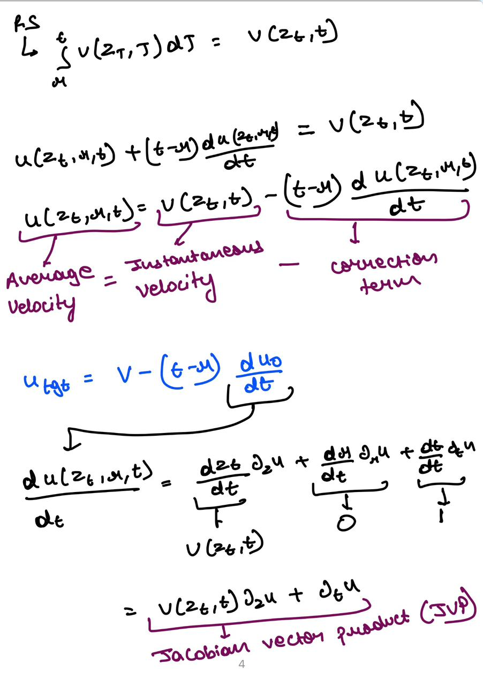
Note 5
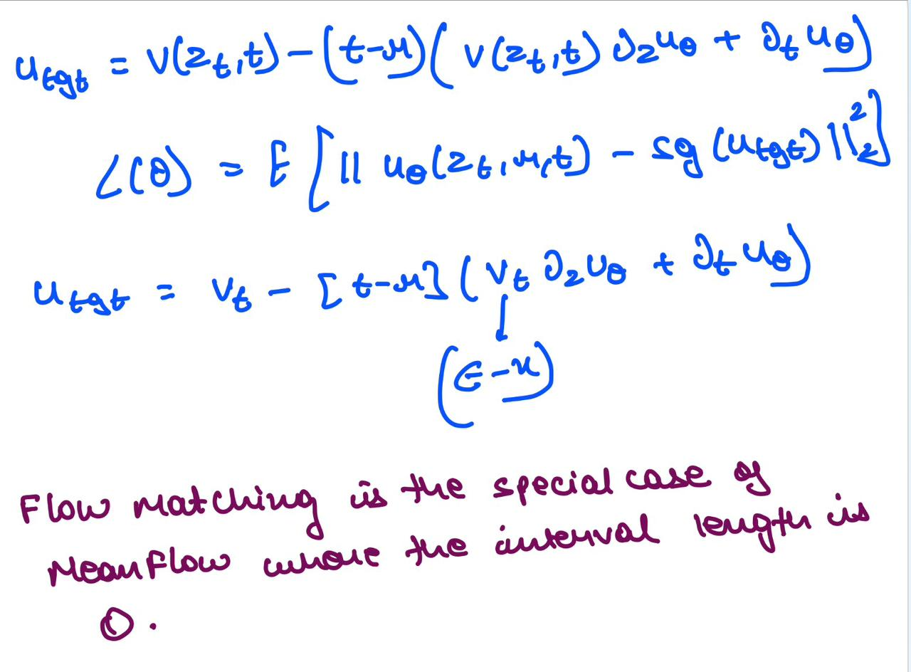
For the three-image overfit experiment, I did not face many major problems because the setup was small and controlled. But I did think about a few important design and stability issues.
Instead of passing time only as a scalar, I used sinusoidal time embeddings. This gives the model a richer
representation of time and helps it understand different values of r, t, and
t - r.
Since MeanFlow learns average velocity between two time points, the sampling of r and t
matters. I sampled two random times and sorted them so that r <= t. I also included cases where
r = t, which helps connect the objective to the normal velocity case.
The JVP term is important but can also make training more sensitive. I handled this by using PyTorch's JVP support, detaching the target before the loss, and using gradient clipping. These choices help avoid unstable updates.
The first issue was that the earlier code was using a smaller image resolution. This meant that even if the model appeared to overfit, it did not fully satisfy the requirement of reproducing the three images at 256x256.
To fix this, I changed the data pipeline to use the larger Imagenette version and explicitly resize/crop images to 256x256:
url = "https://s3.amazonaws.com/fast-ai-imageclas/imagenette2-320.tgz"I also added shape checks so that the experiment explicitly verifies the input and generated image size:
assert selected_images.shape == (3, 3, 256, 256)
assert x_orig.shape[-2:] == (256, 256)
assert x_gen.shape == x_orig.shapeOverfitting three 256x256 images is harder than overfitting small images because the model has to memorize more pixel detail and spatial structure. The smaller model could learn rough shapes but did not reproduce the images clearly enough.
To improve this, I increased the model capacity:
base_channels = 64
time_emb_dim = 128This gave the model more capacity while still keeping the training possible on my available compute.
Since the task is to memorize only three fixed images, exact spatial location matters. A convolutional model alone does not explicitly know absolute pixel position, so I added coordinate channels to the input.
For each input tensor, I concatenate two extra channels containing normalized x and y coordinates in the range
[-1, 1]:
z = add_coord_channels(z)Because of this, the first convolution was changed from:
nn.Conv2d(img_channels, base_channels, kernel_size=3, padding=1)to:
nn.Conv2d(img_channels + 2, base_channels, kernel_size=3, padding=1)This helped the model memorize the fixed spatial layout of the three images more reliably.
The MeanFlow objective uses a JVP term, so training can be more sensitive than a simple reconstruction loss. To make the training more stable, I used several stabilizing choices.
r <= t.r = t, which reduces the target to the normal flow-matching case.torch.func.jvp to compute the JVP term directly.The final loss used in the submitted three-image overfit run was:
u_tgt = v - (t - r) * dudt
loss = ((u - u_tgt.detach()) ** 2).mean()I did not use endpoint reconstruction loss in the final 256x256 result. I initially used endpoint-style reconstruction as a debugging experiment because it made the images easier to memorize, but I removed it from the final run so that the reported result reflects the MeanFlow JVP objective directly.
The 256x256 version required more optimization steps than the smaller-resolution version. Therefore, I trained the model for longer:
num_steps = 20000
lr = 3e-4This gave the model enough time to memorize the three fixed training images using the MeanFlow objective.
After these changes, the final three-image overfit experiment used:
imagenette2-320 as the source dataset.Resize(256) and CenterCrop(256).base_channels=64 and time_emb_dim=128.x_generated = z - u(z, 0, 1).With this final setup, the model produced recognizable 256x256 one-step generations for the three training examples. This shows that the data pipeline, MeanFlow loss, JVP target, and one-step sampler are working end-to-end for the required overfit sanity check.
The required result was to overfit three training examples and show that one-step generation reproduces them. The figure below shows the original images and the generated images.
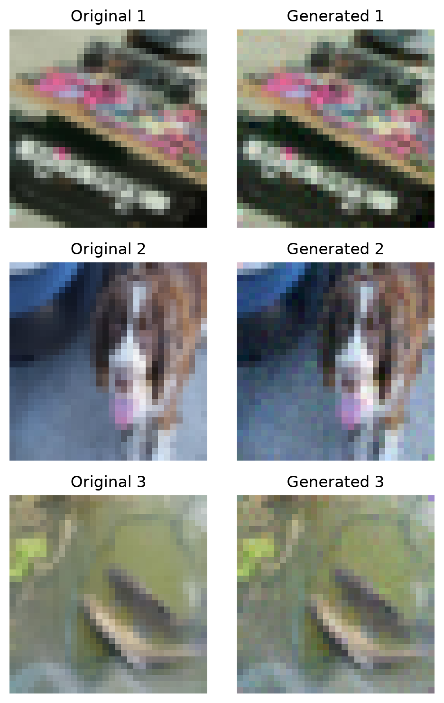
The loss curve for the three-image overfit run is shown below.
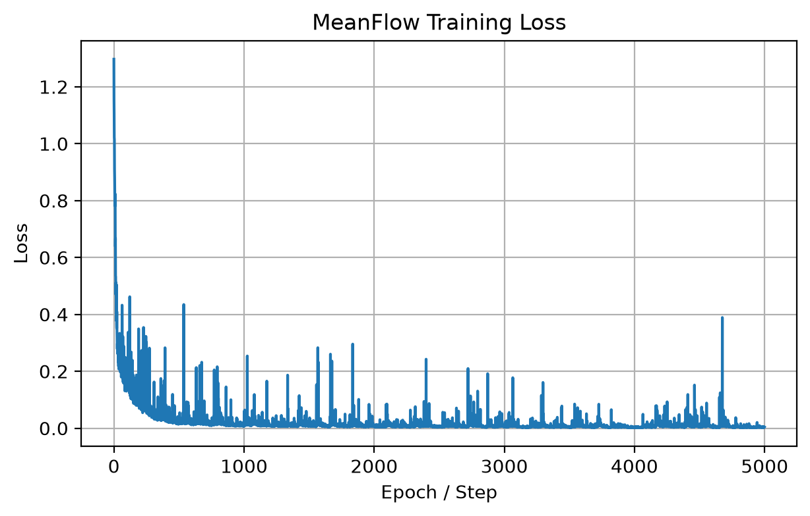
After the earlier lower-resolution overfit experiment, I reran the required sanity check using the corrected 256x256 setup. In this corrected run, the data pipeline, model, and sampler were all aligned with 256x256 images, so the experiment directly matches the intended task more closely.
The figure below shows the final 256x256 three-image overfit result. The generated outputs are recognizable versions of the training images, which indicates that the MeanFlow objective, JVP target construction, and one-step sampler are working end-to-end on the required overfit setting.
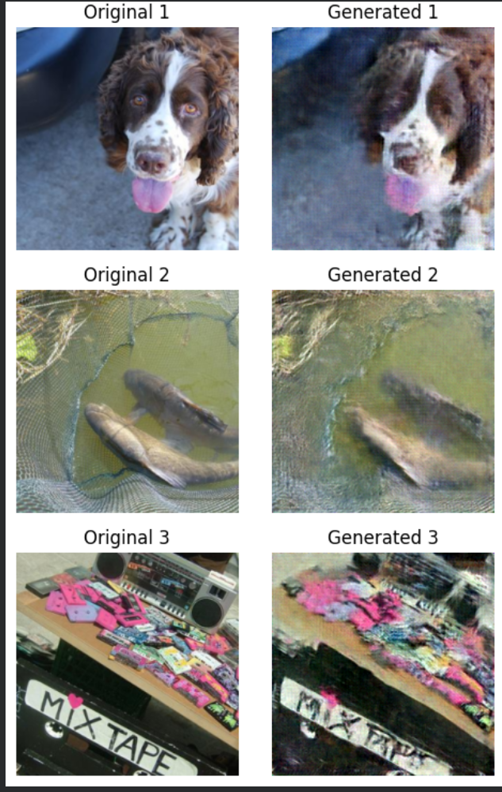
The corresponding loss curve for the 256x256 run is shown below.
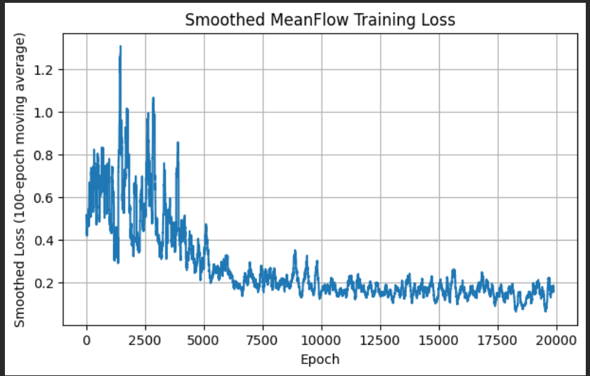
In this corrected experiment, both the selected training images and generated samples had shape
[3, 3, 256, 256]. I also used the pure MeanFlow loss in this final run, without auxiliary endpoint
reconstruction loss. Compared with the earlier lower-resolution setup, this 256x256 version is the final result I use
for the required three-image overfit sanity check.
The generated images are recognizable but still somewhat blurry. My understanding is that this is likely due to the difficulty of memorizing 256×256 images with the current model capacity and limited computation power. I kept the final run focused on the requested 3-image overfit sanity check rather than scaling to a much larger model.
The ideal bonus part was to train on a 10-class subset and show that one-step samples on the training set look reasonable. I attempted this, but I was not able to get a good enough output. So I am attaching the notebook and the outputs below to show my attempt honestly.
The loss curve from my 10-class subset attempt is shown below.
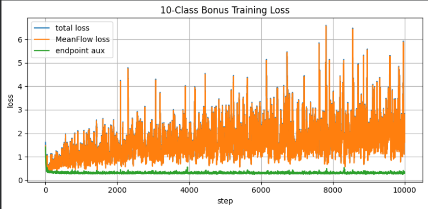
The generated samples from the 10-class subset attempt are shown below.
Generated sample 1
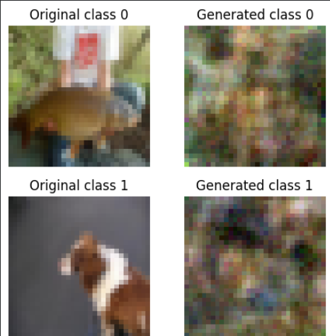
Generated sample 2
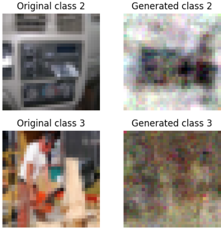
Generated sample 3
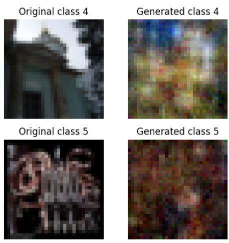
Generated sample 4
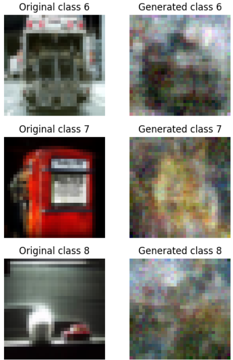
Generated sample 5
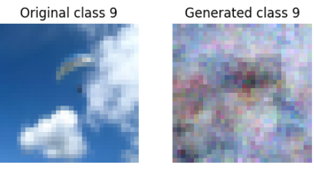
The outputs were not improving enough to claim this as a successful bonus result. After seeing this, I tried the following changes to improve the 10-class experiment:
0..9.r = 0, t = 1.64x64 images.I am including the notebook because it shows the changes I tried, even though the final samples were not strong enough to claim the bonus result as successful.
To reproduce the required three-image overfit experiment:
git clone https://github.com/samarthsoni3002/LR1_MeanFlow.git
cd LR1_MeanFlow
python -m venv .venv
# Windows
.venv\Scripts\activate
# macOS/Linux
source .venv/bin/activate
pip install -r requirements.txt
python train_overfit.py
After running the script, the output images and loss curve should be saved in the outputs/ folder.
report.htmloutputs/original_vs_generated_3_image_overfit.pngoutputs/loss_curve_3_image_overfit.pngnotes_photo/mf1.jpeg to notes_photo/mf5.jpegten_class_loss/ten_class_loss.pngten_class_generated/g1.png to ten_class_generated/g5.png